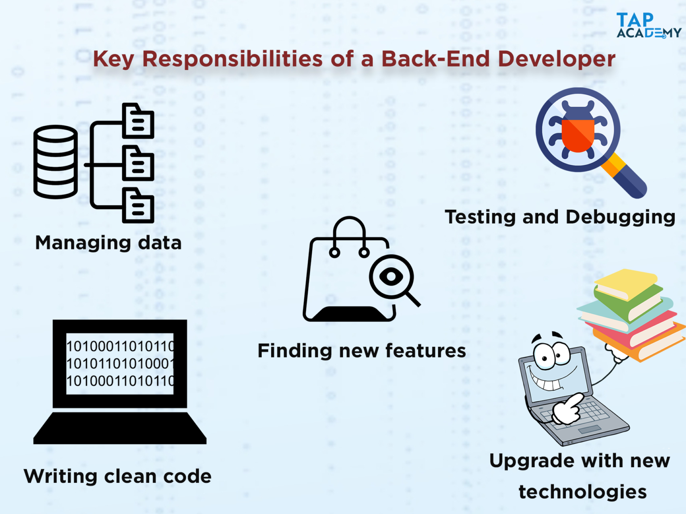

Many actions a developer performs daily require skills like JavaScript or HTML coding, with a great deal of overlap in their day-to-day responsibilities. In this tutorial, we will explain the various tools and technologies these professionals use in their everyday work, as well as the skills needed to be successful in the field.
A front end developer has one general responsibility: to ensure that website visitors can easily interact with the page. They do this through the combination of design, technology and programming to code a website’s appearance, as well as taking care of debugging. Whenever you visit a website, anything that you see, click on or otherwise use is the work of a front end developer.
Below image shows the job responsibilities of a Frontend Developer
As a Backend Developer, you will be managing the exchange of data between the server and the users. Your will be focus on the development of all server-side logic, maintenance, and definition of the central database, and ensuring high performance and responsiveness to requests from the front-end. You will also be responsible for the integration of the front-end frameworks.
Back-end developers work on the server and technological side of the software to ensure that front-facing side is functioning properly. For instance, when you click a certain link on a website, you are seamlessly transferred to another page. Backend developers are the reason we even have a user experience. They are also responsible for storing your information whenever you sign up for something.
